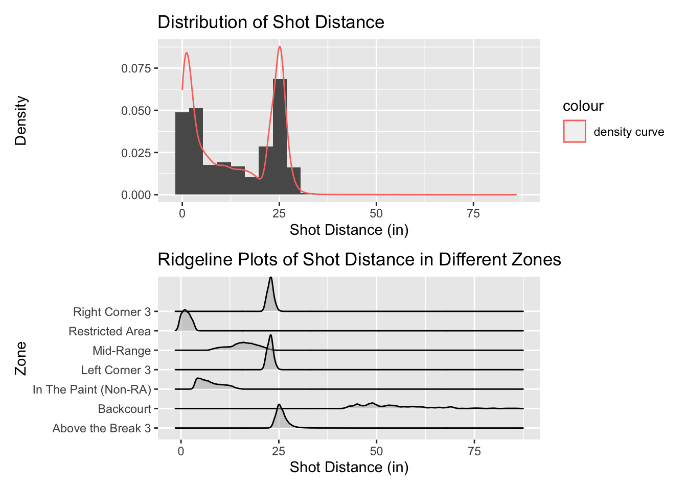
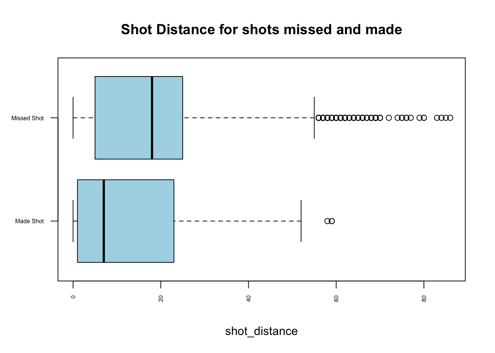
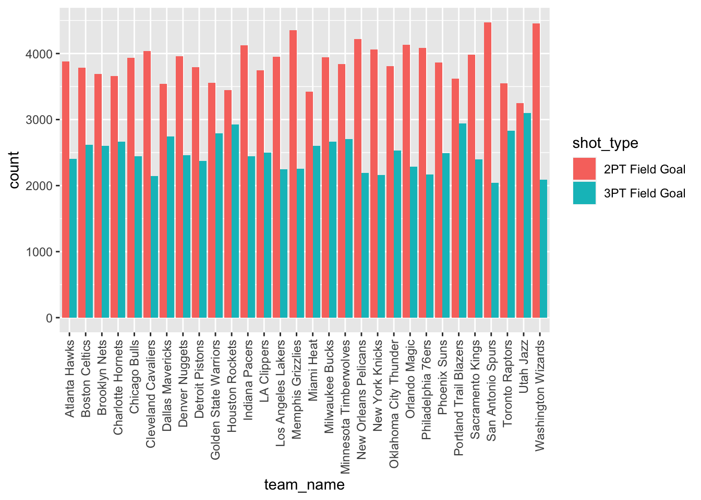

Chapter 5 Results
In this chapter, we will our process to come up with the answers and our conclusions to each of the questions we proposed in the introduction section. Here are our questions proposed in the introduction chapter:
(On team level) Does each team has different preference for 2 point shots and 3 point shots? Does their field goal percentage related to the preference? Does the preference for 2 point shots and 3 point shots change period by period?
(On individual player level) Whether Russ Westbrook (Guard) has different shooting behavior (the shooting count and shot probability on different areas on the field) in different periods of the game? What about LeBron James (Forward)? Is LeBron’s shooting behavior similar to Russ ’s in different periods of the game?
Note that in the following analysis, we need to plot the NBA court to visualize the shooting data. The code for drawing the court is adapted from https://github.com/toddwschneider/ballr, and the court graph is as follows:

5.1 Team Shooting Pattern Analysis
Firstly, to get a general understanding of how many 2-point and 3-point shots each team attempted for season 2020-21, we create a Cleveland Dot Plot as follows:

From the Cleveland Dot Plot, we can see that the total shots made by each team for the entire season doesn’t vary a lot, ranging from around 6000 to 6500. However, for different teams, they have totally different preference for 2-point shots and 3-point shots, which may be resulted by types of players in that team.
For example, Utah Jazz has almost same counts for 2-point shots and 3-point shots with the most 3-point shots in the league. On the contrary, San Antonio Spurs has least count of 3-point shots and most count of 2-point shots in the league.
After getting a general understanding of types and shots attempted for each team, now we want to focus on the Field Goal Percentage (\(\frac{\text{ total shots made}}{\text{total shots attempted}}\)).
Here we will use diverging bar chart to compare the Field Goal % for 2-point and 3-point shots for each team, ordering by Field Goal % for 3-point shots: 
From the plot, we can see that, generally, 3-point Field Goal is less than 2-point Field Goal, which makes sense because 3-point shots are harder to score regarding to the distance.
It is difficult to see if their is any relationship between the team’s preference for 2-point or 3-point shots and the FG%. Based on our previous conclusion, Utah Jazz has the most number of 3-point shots attempted, and San Antonio Spurs were concluded as the team least preferring 3-point shots. However, their FG% for 3-point shots are neither highest or lowest in the league. This situation may be affected by the fact that, since the team prefer 3-point shots, so they make more, and they miss more, so the FG% decreases.
Now we want to see the

5.2 Individual Player Analysis
Here we will specially explore